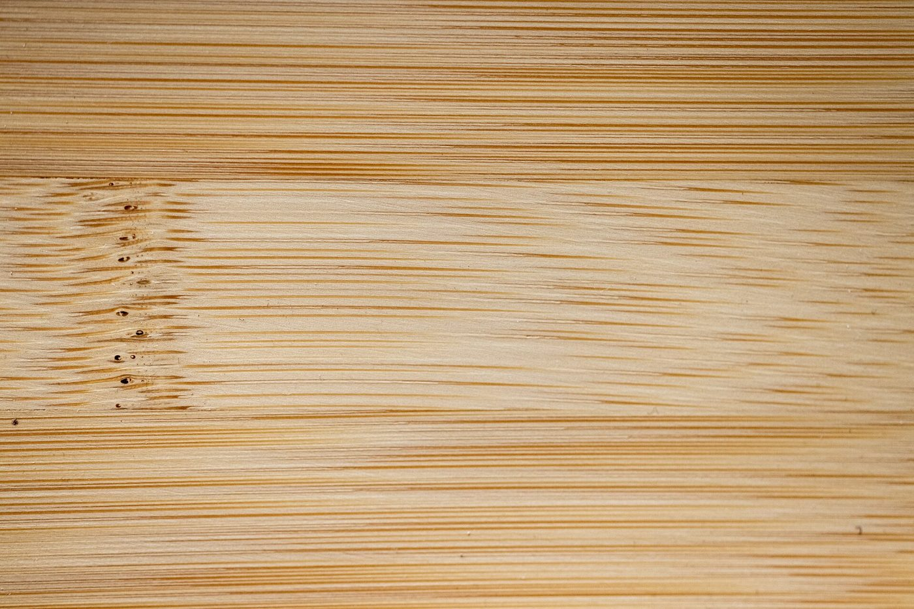

ABOUT
「25」は、ニコッの笑顔
店名の「25」には「ニコッという笑顔」の意味が込められていると、取材記事で紹介されています。笑顔になれるベーグルでありたい、という願いです。
オーナーが添加物に気を配って手づくりしたベーグルを家族に喜んでもらえたことから、「食べ物で人は幸せになれる」と考え、移動販売を経てお店を開いたと紹介されています。鳥栖市の古民家レストラン「LINCOTTO」での販売を経て、2025年5月にみやき町の古民家で開店しました。
- 小麦粉は北海道産「ゆめちから100」、酒種系の天然酵母(取材記事より)
- 生地をゆでてから焼き上げる、薄皮でもっちりした食感(取材記事より)
- 約15種類が並び、季節ごとに入れ替わるとされています
- 田園風景の中の古民家にイートインスペース(小上がり・テーブル席など)があるとされています
※最新の営業情報はInstagramでご確認ください。

MENU
ベーグルのご紹介
取材記事で紹介されていた品の一例です。内容は変わる場合があります。営業時間・価格・詳細は準備中です。

きなこクリーム・あんバターなど
甘い系のラインナップが紹介されています。写真はイメージです。

ブルーベリークリームチーズ
クリームチーズ系も紹介されています。

佐賀のりベーコンチーズ
佐賀産の海苔を使った総菜系として紹介されています。




VOICE
口コミ
以下は制作側が創作したイメージ例であり、実在のお客様の声ではありません。
イメージ例
もちもちの生地で、食べた瞬間につい笑顔に。お土産にまた選びたくなります。
イメージ例
田んぼ道の先の古民家で、のんびりした時間が流れていました。
イメージ例
甘い系も総菜系も迷ってしまう並びで、どれを選んでも楽しみでした。
ACCESS
アクセス・お店の情報
| 店名 | 25bagel(ニコベーグル) |
|---|---|
| 所在地 | 〒849-0113 佐賀県三養基郡みやき町東尾1470-1 |
| 電話 | 準備中 |
| 営業時間 | 準備中 |
| 定休日 | 準備中 |
| SNS | Instagram @25bagel |